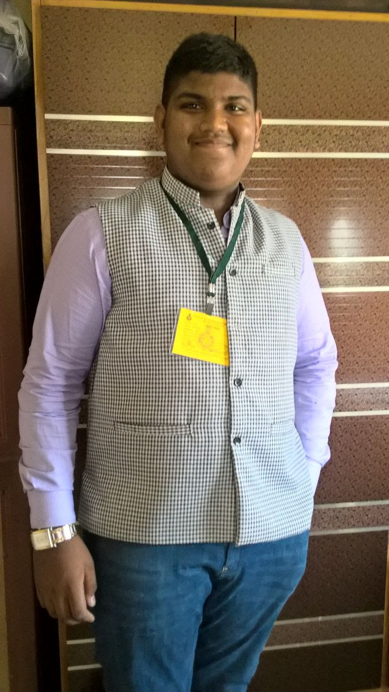

The CEO

Sanath Shailesh Bharne (Born 2 July 2000), is an Engineering Student, Entrepreneur, a Poet, Public Speaker, an Artist and a Philanthropist (Social Worker). Currently pursuing his Mechanical Engineering Bachelor’s Degree in the Don Bosco College of Engineering, Fatorda, Goa. He has been Quite active in participation in major technical and non-technical competitions in state as well as in national level competitions. Ever since he is pursuing his B.E degree (i.e. since July 2018) he has participated in over 10 such competitions and has won several prises like the 1st Prise won in the All Goa Waste Management Hackathon 2020, Which was organised by the Goa Waste Management Corporation(GWMC) and Goa State Innovation Council (GSIC).
Social Welfare Activities.
Sanath Bharne first started his journey towards social service at the age of 16 by spreading awareness door to door in his colony and nearby colonies and forms of social welfare schemes announced by the Prime Minister, like the Atal Pension Yojana, PM Jeevan Raksha Yojana etc. He also had been amongst the frontline volunteers to organise “Swatchh Bharat” awareness rallies.
Since 2018 he also joined YUVA Panaji a local organisation which was organization which works and strives for the welfare society in the fields Youth empowerment, Environment/ Disaster Management, Women empowerment and senior citizen, And Health. Through this Organization he works in various events and workshops on a regular basis. Besides this key events/achievements/ Programmes the organisation also conducted:
• Distribution of cooked food free of cost for the poor/aged/needy in the first phase of the lock down, and in the second phase gave groceries to all poor and needy and cooked food to aged people.
• Also distributed Face Shields to Doctors who served in Private clinics in and around Panaji even in this pandemic situation did not close their clinics and attended every patient that came to them.
• In times of heavy downpour/flood have helped people from low lying areas of Panaji like mala to evacuate and to save their property (like electronics, clothes etc) from getting damage. Also helped them drag out the water that filled their houses.
• He was unanimously nominated as the Executive member with the responsibility of the Environment Pillar for the year 2019. Wherein We Together Achieved a Target of Planting 365+ saplings in and around Panaji, Taleigao and Porvorim.
• The very next year i.e. 2020 he was promoted to the post of Jt. Treasurer of the organisation which he currently holds.